LAW & ORDER.
1850 to 1900
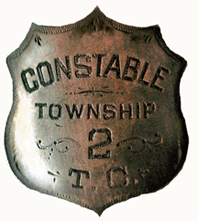
©Columbia State Historic Park Archives.
Columbia Constable badge - (before)1860s.


1850 The first year of Columbia's existance found the need for Rules and Order to prevent the sharpers, gamblers, loafers and other "never do wells" from having their way with the "decent" folk. Under Spanish rule the Alcalde was the only form of justice. The mayor or chief judicial official to be more precise. Soon there were Rules & Regulations for the Miners (1852) and eventually elections created the positions of Law & Order that was the familiar norm in the "states."
Columbia was called the 2nd Township for Tuolumne County. Based on pupulation and voters. The 1850 census for Township 2 (all twenty-nine pages) was actually taken 24 April of 1851, by A. W. Luckett.
1850 A.A.H. Tuttle was the Tuolumne County Judge. (Tuttle is listed in the 1852 census as 32 year old born in Maryland more recently from New York)
1850 George Work was the Tuolumne County Sheriff. (George is in the 1850 census for Sonora Township #1 at 45 years of age from New York. He was living with his family: Mexican wife Gregonia{sp} age 30, an eight month old child and a few "borders")
1850 W.H. Brown is 1st Constable of 2nd Township.
1850 May 31 - Sheriff George Work, after nearly being shot, went to Columbia looking for some Mexican & French shooters, but not a Mexican could be found with gun or sword. A friend writes...."All was quiet, down to to-day, (May 26th,) when I was taken by surprise on hearing a Mexican cry, 'Ice cream for sale!'" (Placer Intelligence - 1850)
1850 June 22 - A Chileno was killed by John Brannan in "self-defence" due to a language misunderstanding. (Sacramento Transcript)
1851 John Leary begins his business in Columbia as an auctioneer, on Broadway, four doors north of Columbia Exchange. The area near where the Gazette Office reconstruction now exists was the original site of John Leary's house. Sold in 1856 to Charles Cardinell. (Historic Buildings - S.Grout)
1851 February - Americans vs. Mexicans. - We learn that a fight took place a few weeks since at French diggings, in the Southern mines, between some Americans and Mexicans, in which pistols and knives were handled with desperation. The fight resulted in the death of four Mexicans, and the complete driving of them off from the diggings, and the wounding of two of the Americans. - We have not learned the cause of the difficulty. (Sacramento Transcript, Volume 2, Number 103, 24 February 1851)1851 May 17th - T. J. Ingersoll at 40, from Missouri, was Justice of the Peace, in Columbia.
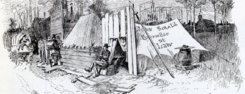
1851 July - Horace Bull started his practice as an Attorney.
1851 D.A. Enyart was the Tuolumne County District Attorney.
1851 George Work was re-elected the Tuolumne County Sheriff.
1851 September - Joseph Carley held his first Justice Court in Bassett's store, to Spring 1852. After which he bought his own house for the purpose.1851 September - John Leary, is elected town Constable and he was also a foreman of the Hook & Ladder Company of Columbia.
1852 David Adams was the Tuolumne County Sheriff.
1852 Columbia Fusileers Organized by John Leary and Col. Thomas N. Cazneau. (Eastman 1:15:67) Fusileers are listed as a “local volunteer social military company.”
1852 April 11 - Affray in Tuolumne Co. - The Stockton Journal has received the following account of a serious affray which occurred between party of Americans and a number of Mexicans, in Tuolumne county, on Monday last. An officer's posse from Columbia had arrested a Mexican, for theft, at a camp called Humbug, on Woods' Creek, three miles above Sonora, and were conveying him to the former place, to be tried, when they were suddenly surprised by a party of Mexicans, who attempted a rescue. Several shots were fired by the Mexicans, but without effect. The Americans returned the fire, and two Mexicans fell, one of them mortally and the other severely wounded. The Mexicans fled, leaving these two in the hands of the Americans. The prisoner escaped. (Daily Alta California, Volume 3, Number 101, 11 April 1852)1852 A.A.H. Tuttle was the Tuolumne County Judge.
1852 Horace Bull was the Tuolumne County District Attorney.
1852 July 7 - Roney shot dead by Edward May, in self-defense, at Columbia.
1852 Columbia's vote in the former year was 168, while in this year it had risen to 1,230.
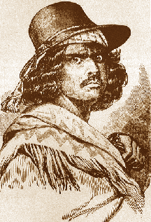
1852 April - An affray occurred at Sawmill Flat, which resulted in the wounding of Claudio (Feliz).... It seems that a Mexican (Reyes Feliz, brother to Claudio) had been detected stealing a pistol(s), and while Constable John Leary of Columbia was attempting to make his arrest, several Mexicans rushed to their companion's assistance, Joaquin (Murietta) himself took a hand in the fight, and, although shot at repeatedly, made his escape. Not so fortunate was Claudio. This person, who was a mere youth of eighteen or so, was very badly wounded. Lying upon the top of a hill up which his pursuers had to advance, he emptied his two six-shooters at them before they could reach the spot. Advancing with cocked pistol, the Constable was about to blow the youth's brains out, when Mr. Caleb Dorsey, (miner and local attorney) interfered, saving his life. Badly wounded, Claudio was borne to the hospital, there to re-cooperate.
1852 - Attorney Caleb Dorsey defends Claudio Feliz and gets an acquital, which displeased the locals. (Sonora Herald 1852.)
1852 July - Rumors had flown that the Mexicans were going to poison a well at Saw Mill Flat and create other mayhem. Col. Thomas Cazneau headed a group of militiamen with a small cannon and proceeded to the Flat; firing the cannon every 100 yards or so. The action may have created the desired effect, except that the storekeeper in the Flat said he never had any trouble with Mexicans and that the whole affair was a waste of powder. (SF Herald, June 8, 1853; H. H. Bancroft, California Inter Pocula, 1888; Republican, July 14, 1852; Alta, June 6, 1852.)1852 July 18 - "A word as to the 200 Americans from Columbia, ready to destroy the camp, and who would have done so but could not agree, etc. The truth is, reports had reached Columbia that we were to be attacked that night, and twenty men all told came over and volunteered to assist in our defence. This offer was thankfully and gratefully declined, being able, in our opinion, to defend ourselves against our foes. So ends, for the present, this great rebellion."
WILLIAM STACEY, (WIlliam Stacey is listed in the 1850 Census as 31 from England)
Saw Mill owner, Saw Mill Flat,
of the firm of Stacey, Bennett & Turner.
(from the Daily Alta California, July 22, 1852, Pg. 1 Col. 6)
1852 The notorious robber and murderer, Joaquin (Murieta, age 20), had his head quarters here, and was well known to many of our citizens as a desperate and dangerous man. At this time, he had not commenced his career of wholesale murder and robbery, but was a "monte dealer" and had a number of villainous scamps connected with him in fleecing his less informed countrymen and others out of their daily earnings. - (Miners & Business Men's Directory - 1856.)
1852 September - San Joaquin News; We have, seen a letter, addressed to a gentleman of (?) which states that at Yorktown Gulch, near Campo Seco a lawless band of fifty Mexicans have started for the lower country on a plundering expedition. They have stolen about eighty animals in that part of the country, committed several robberies and two or three murders, and are now on their way to Los Angeles to join a party who are waiting for them at the place.They are headed by a Mexican named Cloudy, (Claudio Feliz) who was in jail in Sonora last winter, and who is represented as one of the most desperate villains in the country. He has a brother named Reyas now in jail in Monterey, and it is said that Cloudy and his party have it in view to release him by force.
This is the same party who a few days since stole Col. Douglass' animals, and four belonging to Mr A.B. Beaural. It is rumored that four men have been murdered and robbed at Camp Flores. It is feared that a serious difficulty between the Americans and Mexicans may yet arise. (Daily Alta California, Volume 3, Number 244, 4 September 1852)
1852 September - Claudio Feliz was shot dead by an Alizal posse under justice of the peace, Henry Cocks of Monterey County.
The Sonora Herald stated that the "scoundrels"; were "the same gang of Mexican miners that were lately driven from Sawmill Flat." (Sonora Herald, September 4, 1852; Republican, September 4, 1852; Alta August 31, 1852.)
Note: A 2003 book “Searching for Joaquin” by Bruce Thornton mentions that in 1852 Claudio Feliz was arrested while trying to free his brother Reyes who was on their way to Columbia. The book talks about the rampage of murder and robbery from Tuolumne County to Monterey by Claudio and his eventual death, while assuming that Joaquin rode with them. Because Reyes Feliz accused “Joaquin” to clear his own name, a known lying cutthroat, history has recorded it as fact.
Columbia Gazette newspaper of 1853 has an article “Proclamation. One Thousand Dollars Reward! Whereas, it appears to me, that one Joaquin Carillo is the leader of a band of robbers and murderers in Calaveras and the adjoining counties, and has perpetrated a number of heinous offences against the lives and property of that portion of the state….John Bigler, Governor.”
1852 Nov. 10 - Gidding, a German, murdered and robbed near Campo Seco by two Chinamen.
1852 Nov. - Reyes Feliz, 16 years old was hanged by a southern California vigilance committee after a confession of crimes committed. (Star Dec. 4, 1852)
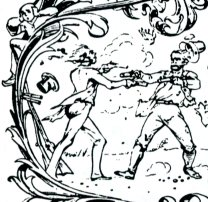
1853 J.D. Bronson & F. L. Pierrepont are Justices of the Peace for 2nd T.P.
1853 Jno. Leary & J. R. Brown are Constables for 1st T.P.
1853 H.R. Riley & J. A. Willington are Constables for for 2nd T.P.
1853 A.A.H. Tuttle was the Tuolumne County Judge.
1853 David Adams was the Tuolumne County Sheriff.
1853 Feb. 5 - Saloons are no longer crowded nightly. (Columbia Gazette) and special note is made of the scarcity of quarrels and fights perpetrated in these popular gathering places. (C.D.C. by H.E. Rensch - 1952)
1853 Feb. 22 - Horace Bull, Esq., a prominent lawyer of Sonora, committed suicide by shooting. Age 29.
1853 Feb. 24 - "More Murders by the Banditti." Newspaper comments on 5 Mexicans killing other Mexicans and robbing Chinese of several thousand dollars, near Columbia. (Daily Alta California)
1853 Feb 27 - There was a devil of a row here (Columbia) last night (26 Feb) in a fandango house. A man got to quarrelling with a gambler about something and the gambler cut him with a knife, and shot another, and their friends tore the house down and broke things generally.
This morning (27) the Fandango House is a perfect wreck. - Letters of John Paul Dart, Mississippian in Columbia
1853 March 26 - Writers and correspondants for metropoliton newspapers, report a sharp decline in gambling and carousing amoung the miners in 1853. (C.D.C. by H.E. Rensch - 1952) Indeed, there was a time during the year when only one gambling house was in operation in Columbia. (Columbia Gazette).
1853 July 3 - In a letter home to his brother, David Baer Hackman, writes of the places in Columbia, "Tomorrow we anticipate a glorious fourth of July...in Columbia, some of the large houses are going to serve up great dinners at four dollars a head and in the evening they are going to have a fancy ball which cost ten dollars for admission. These places are principally patternised(sic) only by gamblers and other fast men and women of the place. On these occasions there is always a great excitement and considerable fighting going on." (A Pennsylvania Mennonite and the California Gold Rush)
1853 July 27 - David Baer Hackman, writes, "A few nights ago I was looker on in one of the gambling places, when one of the gamblers and another man go to querreling. Then one of them drew his "Knife" while the other drew his six shooter and fired at the other across the table. But in the excitement he missed him and the ball flying over the heads of a crowded room and passing through a lamp at the other end of the room. Soon a dozen or more of pistols and knifes were waving overhead and gleaming in the light, ready to pitch in at short notice if there was any fighting to be done. But everything passed off without any body being hurt. Such is life in California." (A Pennsylvania Mennonite and the California Gold Rush)
1853 August 13 - Respectable citizens drove from the town a notorious character - a "fiend" who walked the streets with "Colts" hanging at her sides, accompanied by her "fancy men", while she insulted decent citizens. (C.D.C. by H.E. Rensch - 1952) The Notorious Long Tom Saloon "pulled up stakes" and left between sunset and sunrise, when in doubt as to the outcome of certain court proceedures which it was scheduled to face the following day, and the Gazette remarked: "She is gone, and may we ne'er see her like again." (Columbia Gazette) The Long Tom Saloon was back in full operation soon. (C.D.C. by H.E. Rensch - 1952)
1853 August 7 - Mexican Woman Shot - On Friday Morning (6th Aug) Anselmo Calderon, better known by the name of Peruvian Jo, shot a young Mexican woman, named Incarnation Trevero, through the thigh, causing a dangerous,if not fatal wound. This unfortunate affair occured in Humbug Flat (Northwest of Jamestown, on the east side of Table Mountain), at a Mexican Fandango house, where several scenes of a similar charactor have taken place in the last year. Jo has been comitted to prison to await his trial. (Colummbia Gazette Vol. 1 - No. 39, Saturday August 7, 1853)
1853 August 17 - Ignacio Lisarraga, of Sonora, California swears under oath to Charles D. Carter, Notary Public, that the head now in the possession of Messrs. Nuttal and Black, two of Captain Love's Rangers is the head of Joaquin Murrieta and that he was well acquainted with the celebrated Bandit. - (Taken from poster of the exhibit)
1853 November 4 - The editor of a local newspaper "shuddered" at the "horrible and disgusting sight of several drunken squaws" on the streets of Columbia, which led many young men to sign the Temperance Pledge. (Pacific newspaper)
1853 November 13, Sunday - When coming home from church saw quite a crowd on one of the cross streets: and soon learned that a man had been stabbed; he was from Maine the Murderer was an Italian. (Clementine Brainard's Diary)
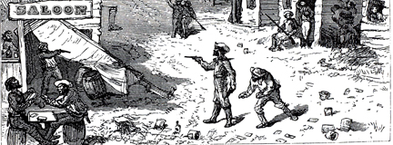
1853 Nov. 13 - An inebriated Austrian miner, Peter Nicolas, quarreled with Captain John Parrot of Pine Log Crossing. The Austrian was said to have already had the Massachusetts man pinned to the ground when he struck him in the throat with his bowie knife. The crime occurred in Columbia at the Charles H. Alberding store at the corner of Main and Jackson. Nicholas was immediately apprehended, the bloody weapon still in his hand. He was arraigned before Judge Joseph Carley's Columbia courtroom. Men from Pine Log, vengeance in their eyes, attempted to seize the prisoner and "lift him" to the nearest tree. Constable William E. Carder....assured Nichola's right to a fair trial...had him stapled to...courtroom floor. But (it proved unsuccessful and the prisoner was carried away by the mob) At the back of Van Gulpen's store...makeshift gallows were concocted. Lawyer James Coffroth eloquently pleaded for a fair trial. County Sheriff, Major Perrin L. Solomon arrived and the mob lost control once again. Soon they relented to the pleas of justice. The eventual outcome was not what the miner's thought was justice. (Columbia: The Town That Midas Touched 1998) (Alta, Nov. 17, 1853)
1853 November 14, Monday - There has been more excitement here today than I ever hope to witness again: the murderer was confined in a building and guarded by about 20 men: but the miners rushed in and seized him and dragged him from the room: and carried him a short distance to a tree: and put a rope around his neck and were going to hang him: but the limb broke and so they went back to the town a few rods onto a hill; and after riot: they concluded to have him tried there on the spot: they went through with a regular trial proved him guilty; and delivered him over to the authorities to be hung when the man died; he was then carried to Sonora in going down they passed our house never saw such a riot. Some of the miners were determined to have him hung then and were trying to get him but did not succeed; it really seemed that we're living in Cal. in '49 and the Lynch Law was the only one that prevailed. Oh! May we soon have such laws here as we have at home; and may they be enforced. (Clementine Brainard's Diary)
1853 Nov. 19 - Capt. John Parrot, of Columbia, murdered by Peter Nicholas. After a narrow escape from lynching, the murderer was tried and found Guilty of murder in the first degree, and sentenced to death; but the sentence was finally commuted to seven years imprisonment.
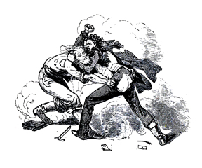
1853 November 20, Sunday - Saw two men fight today not more than a rod from our house: the first I ever saw a very sad fight. (Clementine Brainard's Diary)
1853 December 18 - Justice Joseph Centennial Carley's courthouse was used as a temperance house. Where the Fallon House now stands. (the 1852 census shows Joseph Carley as a magistrate, in Tuolumne County, age30, from England.)
1854 The following positions are slated: Leander Quint, Tuolumne County Judge, P.L.Solomon, Tuolumne County Sheriff, G.A. Pendelton and J. Crathers, Justice of the Peace for Township 2. The 1850 census shows L. Quint as a 28 year old Lawyer from Vermont with $2000 in real estate. The 1852 state census shows L. Solomon age 29 a miner from Germany. The 1852 state census shows Geo. A. Pendelton age 29 a Trader born in Virginia, recently from New Jersey.
1854 January - The "Fusileers," occupying John Leary's Armory Hall, and who first organized the militia. (Eastman l:15:67)
1854 March 23, Thursday - The party passed off very pleasantly I understand, some left on account of Mr. Cazneau & lady's being present among which were Mr. D. I. Cady, and today he received a challenge to fight a duel from Mr. Cazneau, on account of the insult, but did not accept, as he did not consider Cazneau a gentleman, and then Mr. Patterson sent him a challenge which he has accepted and they are to fight tomorrow with swords.(Clementine Brainard's Diary) (Thomas Nugent Cazneau born 14 March 1812 in Boston, Mass. and was a former member of the San Francisco Vigilance Committee in 1851.) The 1860 census shows Thomas N. Cazneau born c1820 from Massachusetts.
1854 March 24, Friday - The duel that was to come off today has all blown over and we all ought to feel very thankful that it has, for what is more dreadful and in fact what can be more horrid than for two men to go out and murder each other in cold blood. (Clementine Brainard's Diary)
1854 April - The success of the Pechaud's French Store on Jackson Street attracted more than customers. Their store was burgled of about $700 in gold dust and coin were stolen. The thieves were apprehended at Captain Raspail's boardinghouse on the corner of Broadway and State streets. $648 of the Pechauds' money was recovered. Unable to post bail in the amount of $4,000, the two men, Day and Brown, were transferred to the county jail in Sonora.
1854 May - Columbia is incorporated.
1854 June 18 - Henry L. Mahon, killed in a drunken quarrel, in Columbia, by unknown assailants.
1854 July 10 - Great fire in Columbia. Loss $500,000. Although almost entirely obliterated by the devouring flames, the town did not remain extinct, but with true California enterprise, immediately began the work of re- building, while yet the smoke arose from the unconsumed fragments. By noon of the next day, thirty buildings were sufficiently far advanced to admit of occupancy, and many others were well under way. Quite a number of the new structures that were begun were intended to be fire- proof, and were of a very substantial character. Among them was a theater building, to be known as " Armory Hall," for use by the " Columbia Fusileers," a military organization which had been formed in the preceding January. The hall contained a stage twelve feet deep, while the auditorium was sixty-two by thirty feet dimensions.
John Leary was the projector (planner).
It will be remembered that John Leary had also erected in 1854 a so-called theatre in Columbia, but which, in the late fire, had been destroyed, giving place to the larger structure of Cardinell.
1854 Nov. 3 - Thos. Allen, killed by Wm. Knox, at Columbia, K. was sentenced to serve six months in State Prison. Knox was from Campo Seco.(Daily Alta California Nov. 13, 1854) William A. Knox is in the 1850 census of Calaveras District as a miner from Virginia age 32.
1854 November - John Leary arranged the second Armory in connection with his Broadway Theatre. Columbia Fusileers were ordered to report to this armory on the evening of Dec. 4, 1854. (Eastman l:15:67).
1854 December 16, Saturday - "We are informed that the unfortunate wretch who was so inhumanly dealt with by the mob on Thursday evening last, was left hanging, suspended by the neck from the flume until Friday, when at a late hour he was finally taken down." (Columbia Gazette.)
1854 December 17, Sunday - Two fellows were arrested today for shooting. (Clementine Brainard's Diary)
1854 Dec. 20 - Fire in Columbia; French bakery burned.
1854 Dec. 24 - William Raney, keeper of a dance house in Columbia, murdered by unknown assassins. The 1850 census shows Wm. Raney as a 23 year old miner from "unknown."
1854 December 25, Monday - There was two men shot at the "fanango" last night, one was shot dead. (Clementine Brainard's Diary)
1855 H. Benton & G.A. Pendelton, Justice of the Peace for Township 2.
1855 John Leary lives in a house on the site west of the future Ticonic Hotel, Washington Street. He sold to Charles Cardinell.
1855 Jan. 16 - Martin Hennessey, a vagrant, shot and killed by officer Carder, in Columbia. W.E. Carder is listed in 1860 census as 26 and a job printer from Tennessee. Martin Hennessey is listed in the 1852 census born in Ireland abt1809 living in San Francisco.
1855 July 1, Sunday - Have just heard of a horrid murder that was committed in Sonora last night. (Clementine Brainard's Diary)
1855 July 13 - Chas. Cardinell, of Columbia, shot by Ingersoll for resisting arrest; act pronounced justifiable. Charles Cardinell born in Vermont c1821 is listed in the 1860 census with wife two children and sister(?)
1855 July 28 - Uriah M. Isgrigg killed by Keuben Bessy in a quarrel, at Columbia; B. was found guilty of manslaughter and sentenced to two years imprisonment.
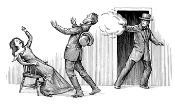
1855 Oct. 10 - Murder of John Huron Smith and lynching of the murderer, John S. Barclay, in Columbia. (See the true story) (1850 census for Yurba Co. shows a John H. Smith, age 23, as a miner from Ohio. 1850 census for Eldorado Co. shows a John Barclay, age 28, no emlpoyment, from New Jersey)
1856 J.M. Stewart was the Tuolumne County Sheriff.
1856 Jan. - Thos. L. Jones succeeded Leander Quint as Tuolumne County Judge.
1856 Apr. 14 - Charles Jarvis killed by Patrick Garhety, at Columbia.
1856 Aug. 13 - Petition of citizens of Columbia for incorporation granted.
1856 - The Miners & Business Men's Directory lists the following:
1857 - John Leary's Theatre built.
1857 July 26 - Gomez shot dead by Alviso, from jealousy, at Columbia. The survivor was discharged from custody.
1857 Aug. 25 - Great fire in Columbia. Loss over $500,000. H. N. Brown, Dennis Driscoll, J. M. B. Crooks, William Toomey and Capt. Rudolph killed by falling walls.
1857 August 25 - Fire started by a Chinaman cooking around 6pm destroyed all of Chinatown and Columbia proper. (Eastman 1:15:72)The town fire started next door, reportedly in a Chinese dwelling, on a lot owned by a Frenchman known as Aime Bonnifoi. According to local histories, a Chinaman "cooking his supper ran out into the street to see what a commotion was and returned to find his cloth walls on fire" (Welts 1973:2).
1857 September 18 - "The authorities of Columbia have passed an ordinance requiring the Chinese to leave town within a specified time. It is necessary for the safety of the place." (from the Sacramento DSS)
1857 Sept. 13 - John Rule, killed in Columbia by a runaway horse to which he was tied.
1856 John Sedgewick was the Tuolumne County Sheriff.
1858 January 17 - "The worst class of Chinese women (prostitutes) are coming into Columbia again; it was hoped after the fire, that they would be kept outside of the corporate limits. But there are white men who are willing to do almost anything in worship of the almighty dollar, even to encourage the presence of these women." (The Alta; newspaper).
1858 February 14 - Three Chinawomen (prostitutes) and one man shot and buried in "China Plot" of the cemetery.
1858 May 17 - Cum Sow, Chinaman, killed in Columbia; probably by white men.
1858 May 22 - George Tim, German, committed suicide in Columbia, with a pistol.
1858 June 15 - Marshall, an ex-convict, killed in an attempt to rob a bank, at Shaw's Flat.
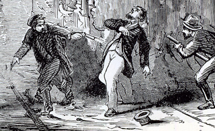
Murder of McDonald and Leary.
1858 November 26 - Following next in the chronicles of Columbia's important events, came the murder of the above citizens. Joel N. McDonald, previously a police officer in Stockton, but at that time a resident of Columbia, and who had been employed to ferret out certain desperate characters whose actions had been giving considerable alarm, was killed under these circumstances: McDonald had succeeded in ingratiating himself with the thieves, and had concerted and carried out with them the robbery of a cabin, and all were proceeding to McD.'s place of residence to divide the spoils, but perceiving a light in the house as they approached, the robbers became suspicious, and assaulted him, striking him first with a heavy iron, and then shooting him through the head, when they made their escape, leaving their victim lifeless. NOTE: 1850 census shows Joel N. McDonald as born in Indiana c1828 and working in Stockton as a teamster.
1858 November 28 - John Leary is attending a fireman's ball and in the uniform of the fireman when he was called out as Constable to do his duty. (Columbia: The Town That Midas Touched 1998)
1858 November 28 - On the evening of the following Monday, another murder, quite as atrocious, was committed. Constable John Leary, a most respected and influential citizen, was murdered while in the discharge of his duty, no doubt by the same gang who were concerned in the other affair.
Mr. Leary, with Marshal Mullan, was watching some suspected characters, and while endeavoring to detect and arrest them on Waldo street, Mr. Leary was killed, having, it is supposed, come upon them while they were engaged in robbing a drunken man, and at the moment of seizing one, received a heavy blow upon the forehead, which fractured his skull, while another shot him through the body, the ball passing near the heart. The murderers escaped, though fired upon by Mullan. The 1860 census shows a Patrick Mullin age 30 from Ireland keeping a livery. His wife Hannah, 25, from Ireland and daughter Jane age 2. The census lists two other adult males as well.
Mr. Leary was one of the earliest settlers of Columbia, and was a most valuable officer and citizen. His death was universally lamented.
1858 November 29 - Two men, Harrison Morgan and Richard Wallace, were arrested on suspicion of the latter murder, and were taken to the jail at Sonora. Two days later, they were removed to Columbia, to be examined by Justices Letford, Dodge and Hopkins. Wallace confessed his complicity in the several robberies that had taken place, but denied that he was concerned in the murder on Waldo street. Wallace's testimony, and that of the officers who made the arrests, was such as to produce a conviction of their certain guilt in the minds of all; and the Justices ordered the men to be remanded to the County Jail. The citizens were ordered to withdraw from within the bar, and the officers present, viz.. Sheriff Sedgwick, Deputy McFarland, Marshal Mullan, Constables Parker and Faughman, and ex-officers Carder and Palmer, prepared to leave the Court room with the prisoners, by the back entrance, the Sheriff and Mullan leading Wallace, and McFarland and Parker leading Morgan. The people were in great numbers outside the Court, but no noise or commotion prevailed, and no difficulty seemed imminent, but as the j)arty passed out a rush was made for both prisoners, the mob seizing the officers and holding them. Morgan was taken by the mob, but, by great efforts on the part of the officers, Wallace was preserved from the crowd and landed safely in jail in Sonora. Morgan's life was short. Taken up Broadway and along the Gold Springs Road to the flume, a rope was put around his neck, and without a moment for prayer, he was run up.
1858 - There is a favorite incident in connection with this hanging which a decent regard for the feelings of the respectable gentlemen who have often and kindly narrated it will not permit the writer to leave out: " At nightfall, a Chinaman, with a basket of vegetables on his head, proceeding to Gold Springs, brought up all standing against the life-less form of Morgan, which knocked off his load and nearly upset him. Looking up, the affrighted Celestial beheld with horror the pallid corpse, swinging to and fro in the night wind. He started off at a pace that made his pigtail assume a nearly horizontal position, and it is a matter of conjecture whether he has yet stopped."
For the succeeding years, Columbia presents the appearance of a town gradually decaying with the decadence of her mines, and slowly sinking into the half-dead, half-living state which is the certain fate of every mining camp. Her glories, departing, have left but traces of the once prosperous and proud community whose history, replete with incidents, would, if fully written out, fill many a volume, and which would contain truths more marvelous than any fiction. It would tell how five thousand men through the long years brought all the resources of which man is capable to fill up their lives, while they sought for gold within the scope of vision of the proud "Gem of the Southern Mines." How they toiled, those who come after them can see. Casting an eye over the plains made desolate, the canons and gulches eroded to their very foundations, hills and elevations demolished, carried away piecemeal, that every particle of shining metal should come at length into the purses of the toilers, the mind reverts to the time when the waste was populous, when the solitude resounded to the blows of myriads, who came, toiled, died, and left the heritage of mines worked out, towns in decay, and forests devastated. The glories of her career passing from her, Columbia's decline commenced. Not much remains to tell of her history. Here and there through the succeeding years a few events worthy of remark took place.
1859 November 19 - A shooting occured on this day which was later written up the following days by two sources.
1859 November 21 - George W. Chase killed by Deputy Sheriff (George) Hildreth, in Columbia, in the discharge of his duty. He was exonerated. ( A History of Tuolumne County, California - B.F. Alley, 1882)
1859 November 24 - AFFRAY IN COLUMBIA. On Saturday night, November 19th, George W. Chase and George A. Hildreth had an affray at Columbia, when Chase fired at the latter, The fire returned, and Chase was shot. He died soon afterward. Hildreth was acquitted by the Coroner's Jury. (Sacramento Daily Union)
1860 July 18 - Census shows James McGowan, 35, as Constable of Township 2, from Ireland and married to Ann, 27, from Ireland as well, with four children.
1860 September 27 - "Ditch Breakers" blow up the old water company's high flume. (Columbia Times)
1860 Monday, November 3 - Jean Pechaud (prop. of the French Store on Jackson St.) neglects to mention that his and his
brother's (Francois) increased business continued to attract some unsavory types. On the evening of the above date, according to a local newspaper, a daring attempt was made to break into the store. The thieves cut out some bricks near the hinges of the iron doors located on the back side of the building but were scared away when they heard a noise. They returned later, however, and attempted to break out the heavy iron bars fastened over a window leading into the basement. Fortunately, these proved to be too secure. They gave up and left.
1861 April 15 - Hugh Canovan, aged 38, stabbed to death in Columbia by B. F, Ryder, who escaped conviction. (Hugh Canavan is listed in the 1860s census as M. Blacksmith from Ireland worth $600 and 38 years old)
1861 June 28 - Jacob R. Giddis was murdered while working the Tuolumne County Water Company ditches. He was found at the reservoir near Strawberry. He was buried in Columbia next to his friend who had died earlier. Jacob had the headstone created for his friend Joel Cumback in 1857. (Columbia Cemetery Tour by Patricia Yokum Perry)
1861 July 26 - Sloan stabbed to death in Columbia. (The 1860s census shows three men named Sloan living in Columbia)
1861 July 27 - Fire in Columbia. Loss $26,000.
1861 Aug 22 - A FREE FIGHT - We are informed that a number of Mexicans got into a muss at Tuttletown on Sunday night, when they commenced shooting at each other. Four or five of them were wounded, none, however, fatally. No arrests were made.
From the Coliumbia Times
August 22, 1861
1861 September 12 - CHINA WOMAN POISONED - Last week a femanine(sic) person of the delectable locality of Chinatown, took an overdose of opium, and slept some thirty hours. As her vestal friends thought she intended to sleep to the 'crack o' doom!' and thus deprive them of her chaste society, they sent for Dr. Baldwin, who in the course of a couple of days, restored the miserable creature to as much of consciousness as the Lord had endowed her with - to the great joy of the celestial beauties of that odiferous locality.
September 12, 1861
1865 Jan. 16 - Joseph Snyder suicided in Columbia, with a pocket knife. No cause known.
1865 July - the bursting of W. O. Sleeper's bank, with liabilities of fifty thousand dollars or such a matter, after a dozen years of success in a small way; a ditch dispute; an occasional shooting scrape, or robbery; sum up the short and simple annals of her later existence, where she but lives in the shadow of the mighty past. (The 1860 census shows W.O. Sleeper age 44 Banker worth a total of $19,000 from Maine)
1866 Oct. 13 - Fire in Columbia. Loss $4,200.
1866 John Gindel, a German, suicided near Columbia, probably through insanity. 1860 census shows a John Gindel as a 39 year old foreman from Hesse-Kassel, Germany worth $1800 with family at Trenton, Ward 5, Mercer, New Jersey)
1867 Mar. 22 - Morgan's Building burned in Columbia. Loss $2,000.
1869 May 4 - Son of L. Jacobs, aged 4 years, drowned at Columbia.
1869 Per Johnson's home was robbed of wine and other provisions from his cellar. So he set up a “trap” for the thieves. Setting a loaded pistol by the door. He forgot and was the first person through the door and “received the contents of the weapon in the pit of the stomach – the ball ranging downward past his groin.” (see Oct. 1878) {Columbia Cemetery Tour by Patricia Yokum Perry} The 1860 census shows a Saloon Keeper, P F Johnson, who was 40 from Denmark, Married to Petra, 37, Mexican and child Mary S age 3. $1000 worth.)
The 1870 census (54 pages) was taken from 5 to 28 July 1870, by M.C. Andruss, age 33, Asst. Assessor from Vermont.
1870 July 9 - Census shows Jubal Harrington from Massachusetts as a 67 year old Justice of the Peace in Columbia. Also J.S. Nugent from Ireland, as a 50 year old Lawyer.
1871 June 13 - Chinese sluice robber killed, at Columbia.
1871 August - John Leary was removed from the St. Anne's cemetery and reburied next to his wife near San Francisco Bay in a family plot. (The monument to his garve was noved as well and after the 1906 SF earthquake, it became landfill and the Learys final resting place was some mass grave in Colma)
1871 Oct. 15 - John F. Rebstock, known as "Peg Leg," killed in Columbia, by William Jones, who was sentenced to State's Prison for 14 years. The 1860 census shows a William Jones age 44 from Wales as a Miner. The same 1860 census shows a William Jones in Columbia age 30 a miner from Texas. The 1880 census also shows a William Jones age 62 as a miner from Wales staying at the Morgan House. Common name.
1873 May - Ah Fook murdered in Columbia.
1873 July 8 - Burns, aged 8, run over and killed at Columbia. (1870 census shows Ernest Burns born c1864 in California living with family of seven children and parents William and Kate Burns)
1873 July 31 - Joseph Kademacher killed by a falling building, at Columbia.
1874 Aug. 1 - William Morgan, formerly of Columbia, killed by Indians. 1870 census shows William Morgan as farmer worth $11,000 from North Carolina, a father to three children and a wife from New York. They had previously lived in Texas.
1874 Nov. 14 - Adolph Parou, aged 50 years, killed in Columbia by Thomas Hays, for debauching the latter's daughter.
1871 Nov. - The next sensation pertained to Columbia, and was the killing, under eminently justifiable circumstances, of Adolf Parou, by Thomas Hayes. Parou met his deserved death through the lowest species of immorality, touching as it did the well-being and virtue of young school-girls and probably no manslayer ever met with more general approbation than did Hayes. From (A History of Tuolumne County, California - B.F. Alley, 1882)
1874 Oct. 26 - Thomas Cunniff died suddenly in Columbia, from the effects of intemperance.
1876 May. 7 - W. H. Smith, once Lieutenant in Stevenson's Regiment, suicided with morphine, at the Hospital in Sonora. The 1870 census shows W.H. Smith age 48 as a miner, born in New York. Boarding with the Rocca family in Chinese Camp.
1878 Jan. 15 - Robbery of the Sonora and Milton stage at Brown's Flat, and over $5,000 taken.
1878 October 19 - Per Johnson had been living in too much pain from an accidental shooting. (see 1869) He left three letters to friends asking for forgiveness and to be buried in Columbia. He committed suicide by shooting himself on the road to Columbia, at Summit Pass. Two bullet holes were found in his breast; "it was assumed that he fired two shots - the first not having the desired effect, which was a few inches over the heart, he picked out the used ball, reloaded the pistol, and fired again, killing himself instantly." (Columbia Cemetery Tour by Patricia Yokum Perry)
1878 Dec. - John Gerber was involved in an argument and was stabbed. (Columbia Cemetery Tour by Patricia Yokum Perry) The 1870 census shows John Gerber as a 20 year old miner and born in New York. Living with Adam Gerber a 57 year old miner born in Germany and two siblings. The Great Register of Tuolumne County Voters shows John Gerber living at Yankee Hill, Aug. 20, 1875.
1879 January 4 - The Sons of Italy were having a dance exclusively among their own people. John Gerber and some other "young bloods" "sailed in" for a dance, notwithstanding the objections raised against their dancing by the Italians. They demanded to dance, and it was finally agreed they could do so if they paid 25 cents a dance. Gerber danced once, and on payment being demanded, refused to pay. A fight ensued and Gerber was stabbed twice in the back, although surprisingly he was not seriously wounded. Apparently this was the second time Gerber had created this type of disturbance; he was fined $20.00 for malicious mischief. (The Tuolumne Independant)
1879 Mar. 27 - Samuel J. Brown, of Columbia, a carpenter by occupation, suicided by poison, owing to ill-health. (The 1870 census shows S. J. Brown age 46, Carpenter, from Pennsylvania)
1879 May 27 - Fire in Columbia; Louis Levy's residence consumed, with a loss of $1,600. The 1880 census shows Louis age 31 living with parents Joel age 72 & Rosa age 68, both from Posen, Prussia, and Louis is listed as a Merchant and "P.Master" born in Louisana.
1880 June 1 - census was started by J.L.R. Bowen and filled 13 pages for the town of Columbia.
1880 June 3 - census shows Constable Josiah N. Davis age 46 from Missouri. Both parents from Maryland.
1880 June 4 - census shows Justice of the Peace to be Henry J.F. Kluber age 45 from Schleswig-Holstein (Germany).
1880 Oct. - Fire in Sonora. J.C. Duchow's residence burned; loss $3,000. Barry and wife, of Columbia, arrested as incendiaries. The 1880 census of Sonora shows Duchow family: John C. age 49, printer, born in Massachusetts, father from Germany, Marian age 26, keepinghouse, born in Connecticut, parents from Scotland, John C Jr. age 6 born in California, Arthur age 3 born in California, Lydia Duchow, age 70, Mother, Massachusetts. John Barry is listed in Columbia age 50, a miner from Sweden, with wife Henrietta age 40 from Massachusetts. (Not sure if these are the same Barry's.)
1881 Mar. 2 - Philip Mathews died at Fallon's Hotel, Columbia. Probable suicide.
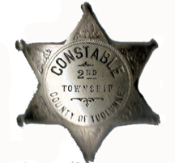
1888 John W. Nash is Town Constable.
1892 Sept. 2 - John W. Nash was listed as 40 years of age, 5'10", dark complextion with black eyes and a scar on lower jaw.
James G. Fallon, born c1856 in Columbia became (Not sure when) Justice of the Peace.
1900 June 1 through 30 - The census is 25 pages long for Township 2 and John J. Brady was the enumerator.
1900 June 7 - Census shows Edmond P. Gallagher as Constable born Nov. 1863 in California, married 15 years to Mary A. born June 1864. Edmond has Irish parents.
1900 June 7 - John W. Nash. The census shows him as a Miner, born in (San Jose, Ca.) (7) June 1852, married (19 Jan 1879) to Ellen T. (Costella) born (New York) Feb. 1857 and married 21 years! John's father was from Maine and his mother from Mexico. Ellen's parents were from Ireland. They have six children. (parenthesis are mine and not on census)
1905 February - John W. Nash is Town Constable again.
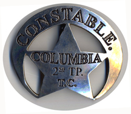
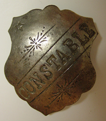

{kind=link}
{kind=link}